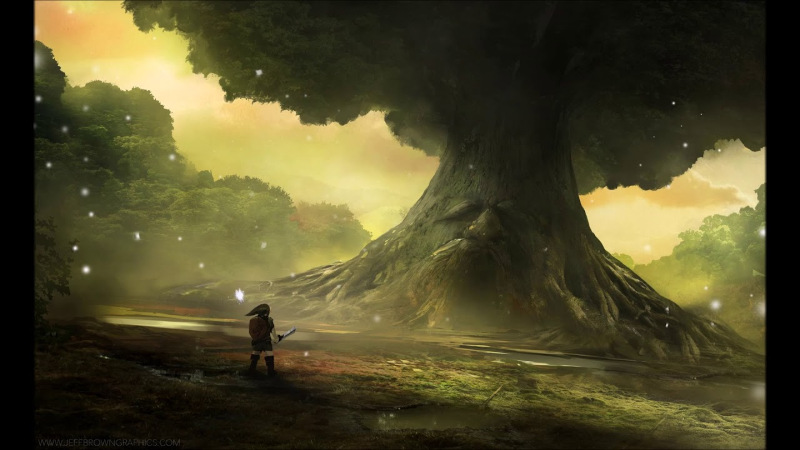
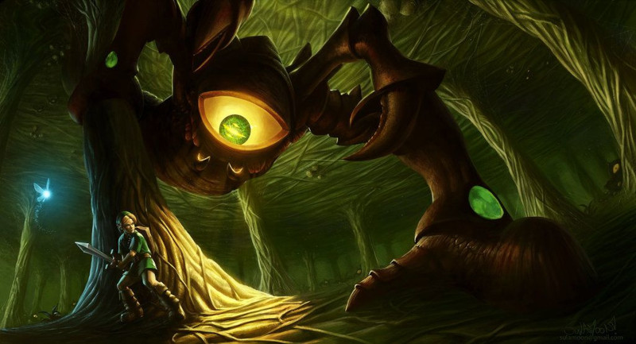

Kokiri Forest
Saindo de sua casa, encontrará Saria, a melhor amiga de Link, que está contente por ele finalmente ter conseguido uma fada. Converse com as crianças de da floresta, você descobrira que a passagem para Deku Tree está sendo bloqueada por um garoto mal-humorado chamado Mido, o líder dos Kokiris. Vá para a esquerda da sua casa e você encontrará Mido, ele dirá que é muito perigoso seguir em frente, somente alguém com pelo menos um escudo e uma espada pode passar. Você deverá obter esses equipamentos para passar por Mido. A direita da casa de Link suba a elevação e siga em frente em direção de algumas cercas, chegando a um pequeno buraco na parede. Entre por ele, encontrando um pequeno labirinto com uma grande pedra rolante, espere a pedra passar e atravesse o labirinto, chegando a um baú. Abra-o e encontre a Kokiri Sword.
Volte todo o caminho e vá para a casa de Mido (A frente da elevação), onde você encontrará nos baús alguns Rupees e se der sorte haverá um heart. Caminhe entre a grama alta próxima para conseguir alguns destes pequenos cristais. Consiga pelo menos 40 Rupees e corra para a loja da vila (Ao centro do lago; à esquerda). Quando estiver pronto, vá falar com Mido. Vendo você com uma espada e um escudo, ele permitirá que você vá visitar a grande Deku Tree. Vá matando os Deku Babas no caminho para conseguir uma quantidade razoável de Deku Sticks. Quando atingir a grande árvore, ela explicará que está morrendo, por ter sido amaldiçoada pela magia profana de Ganondorf, que a destrói de dentro para fora. Ela pede para que Link penetre em seu interior e tente impedir que isso aconteça. Entre pela boca da árvore que se abriu.
Inside the Deku Tree
Siga em frente e suba a escada á sua esquerda. Siga por esse caminho e você logo encontrará um baú contendo o Map. Continue, salte sobre o buraco e entre na sala. A porta se trancará atrás de você. Use seu escudo para rebater a noz atacada pelo oponente ao centro para que ele comece a correr pela sala. Vá para o centro onde o oponente estava então mire nele (Botão Z) para que a porta seja destrancada. Salte nas plataformas, pegue a Fairy Slingshot dentro do baú e vire-se em direção da porta. Mire na escada e atire, abrindo uma passagem para você voltar.
Aproxime-se da parede (Onde você encontrou o Map) e use seu Slingshot para matar as aranhas. Siga ao topo e então continue correndo até atingir outra sala. Pise no interruptor do chão para ativar as plataformas, salte para o outro lado e pegue o Compass no baú, pule para o outro lado e atire na aranha para ganhar a Gold Skulltula e no baú há um Recovery Heart, use o Deku Stick na tocha, acendendo-a. Em seguida, acenda a tocha não acesa para abrir a porta. Antes de continuar, note a Giant Skulltula, que cairá do teto. Mate-a com um golpe no abdômen, pule, mirando na teia de aranha abaixo. A teia se rasgará e você cairá em uma sala cheia de água.
Mate a aranha e aparecerá a Gold Skulltula, há um interruptor na segunda plataforma. Pise no Switch e a tocha se acenderá então pule para pegar seu prêmio. Use o Deku Stick e acenda-o, salte para a plataforma seguinte. Queime a teia para revelar uma nova passagem, atravesse-a.
Você encontrará outro Deku Scrub, que deve ter sua noz rebatida, ser atingido e interrogado. Ele revelará uma sequencia para a sala da rainha Gohma: 231. Acima da porta você encontrará um olho. Atinja-o para poder passar.
Mergulhe e procure um interruptor, a esquerda, fazendo com que a água baixe por um certo tempo. Atravesse rápido. Mate a Giant Skulltula e empurre o bloco. Suba no bloco e atinja a porta. Mate os inimigos, acenda as tochas e entre na porta. Mate a Giant Skulltula. Use o Deku Stick na tocha, acendendo-a, queime as teias. Entre pelo buraco.
Empurre o bloco até derrubá-la, formando uma ponte para você saltar para a plataforma com uma tocha. Acenda um Deku Stick e corra de volta para a teia no chão, atingindo-a com a vareta.
Você encontrará três Deku Scrubs de uma vez. Você deve atingi-los (Rebatendo as nozes) a sequencia é aquela dita pelo Deku Scrub interrogado há tempos atrás (231). Olhe para cima e prepare-se para o chefe!
Parasitic Armored Arachnid: GOHMA
Para matá-la, fique na sua frente. Ela atacará então saia da sua frente e ataque no olho do chefe que cairá, aproveite para dar espadadas no chefe. Quando ela se levantar, ela escalará as paredes até o teto então atire com a Slingshot para ela cair. Repita a sequencia até derrotá-la.
Em seguida recolha o Heart Container. Uma vez fora dali, a Deku Tree contará a lenda da Triforce. Antes de morrer, confere a você a proteção da Kokiri’s Emerald.
Próxima página